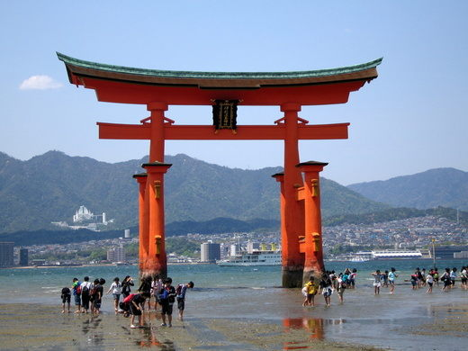
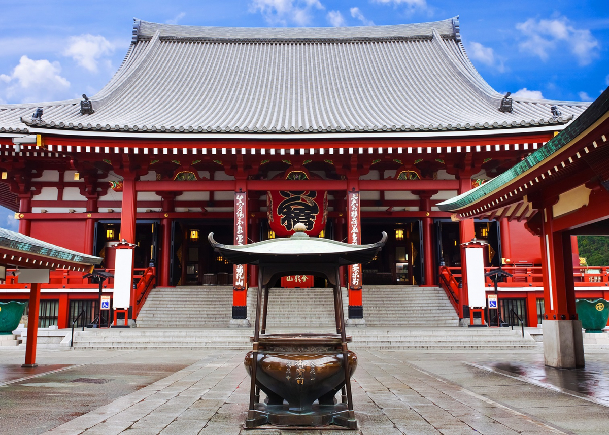
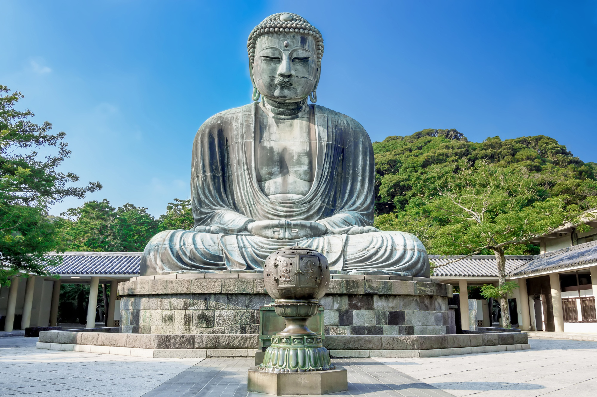

Kyoto
Arashiyama Bamboo Forest

The Arashiyama Bamboo Grove is one of Kyoto’s top sights and for good reason: standing amid these soaring stalks of bamboo is like being in another world.
Kinkakuji Temple

One of Kyoto's most famous attractions, this temple was originally built in 1397 as a residence for shogun Ashikaga Yoshimitsu. The structure was completely covered in gold leaf, earning it the name Golden Pavilion.
Fushimi Inari Taisha

This shrine is one of many located throughout Japan that was built to honor Inari, the Shinto god of rice. It is famous for its thousands of vermilion torii gates, which straddle a network of trails behind its main buildings. The trails lead into the wooded forest of the sacred Mount Inari, which stands at 233 meters and belongs to the shrine grounds.
Nijo Castle (Nijojo)
.jpg)
The gorgeous style of this castle was intended as a demonstration of Shogun Tokugawa Ieyasu (1542-1616)'s prestige. Nijo-jo Castle was the residence of the Tokugawa shoguns in Kyoto, who had been ruling Japan for over 260 years from 1603 to 1868, and it remains an eloquent testimony to their power.
Hiroshima
Itsukushima
Itsukushima, also known as Miyajima, is a small island in Hiroshima Bay, western Japan. It is known for its forests and ancient temples. Just offshore, the giant, orange Great Torii Gate is partially submerged at high tide. It marks the entrance to the Itsukushima Shrine, which was first built in the 12th century.
Hiroshima Peace Memorial

One of the only two cities in the world to have suffered an atomic bombing, Hiroshima and its Peace Memorial Park are a testament to the horrors of war. Raw, thought-provoking and solemnly beautiful, this expansive park in the centre of the city was established in 1954 close to the hypocentre of the bomb. Dedicated to world peace, its grounds contain several ruins of buildings devastated by the blast, as well as monuments built to honour the victims.
Hiroshima Castle

This shrine is one of many located throughout Japan that was built to honor Inari, the Shinto god of rice. It is famous for its thousands of vermilion torii gates, which straddle a network of trails behind its main buildings. The trails lead into the wooded forest of the sacred Mount Inari, which stands at 233 meters and belongs to the shrine grounds.
Tokyo
Tokyo Skytree

Tokyo Skytree is a broadcasting and observation tower in Sumida, Tokyo, Japan. It became the tallest structure in Japan in 2010 and reached its full height of 634.0 metres (2,080 ft) in March 2011, making it the tallest tower in the world, displacing the Canton Tower, and the second tallest structure in the world after the Burj Khalifa (829.8 m/2,722 ft).
Sensō-ji
Sensō-ji is an ancient Buddhist temple located in Asakusa, Tokyo, Japan. It is Tokyo's oldest temple, and one of its most significant. Formerly associated with the Tendai sect of Buddhism, it became independent after World War II. Adjacent to the temple is a five-story pagoda, the Asakusa Shinto shrine, as well as many shops with traditional goods in the Nakamise-dōri.
Tokyo DisneySea

Inspired by ocean tales and legends, the seven themed ports of Tokyo DisneySea offer a wealth of fun attractions and entertainment, bursting with imagination and adventure.Tokyo DisneySea is a 176-acre theme park at the Tokyo Disney Resort located in Urayasu, Chiba Prefecture, Japan, just outside Tokyo.
Tsukiji Market

A visit to Tsukiji Outer Market is best combined with a fresh sushi breakfast or lunch at one of the local restaurants. The restaurants are typically open from 5:00 in the morning to around noon or early afternoon. Because most of the fish served and sold at Tsukiji Outer Market is delivered directly from Toyosu Market, this is one of the best places in Tokyo to enjoy fresh seafood.
Kamakura
Kōtoku-in
The statue commonly known as Kamakura Daibutsu (Great Buddha of Kamakura), a colossal copper image of Amida-butsu (Amitabha Buddha), is the principle image of Kotoku-in. The fact that it sits in the open air makes it unusual amongst large Buddha statues in Japan.
Hase-dera Temple

Hase-dera, commonly called the Hase-kannon is one of the Buddhist temples in the city of Kamakura in Kanagawa Prefecture, Japan, famous for housing a massive wooden statue of Kannon.
Hakone
Lake Ashi

Lake Ashinoko was formed in the caldera of Mount Hakone after the volcano's last eruption 3000 years ago. Today, the lake with Mount Fuji in the background is the symbol of Hakone. The lake's shores are mostly undeveloped except for small towns in the east and north and a couple of lakeside resort hotels.
Hakone Open-Air Museum

Hakone Open-Air Museum is Japan's first open-air museum, opened in 1969 in Hakone in Ashigarashimo District, Kanagawa Prefecture, Japan. It has collections of artworks made by Picasso, Henry Moore, Taro Okamoto, Yasuo Mizui, Churyo Sato, and many others, featuring over a thousand sculptures and works of art.
Yokohama
Yokohama Chinatown

Its history is about 160 years long. Yokohama Chinatown is the largest Chinatown in Japan and it is one of the largest in the world. There are roughly 250 Chinese-owned/themed shops and restaurants scattered throughout the district, with the highest concentration centered on a 300 square metre area.
Red Brick Warehouse

The Yokohama Red Brick Warehouse is a historical building that is used as a complex that includes a shopping mall, banquet hall, and event venues.
Sankeien Garden

As you stroll through the park you will find bridges, streams, small waterfalls, bamboo groves, and ponds. The house that Hara and his family lived in (Kakushokaku) is huge; a sprawling, flat dwelling with dozens of spacious, interconnected tatami rooms, overlooking a private green lawn. In late March or early April, the cherry blossoms (sakura) are in full bloom.